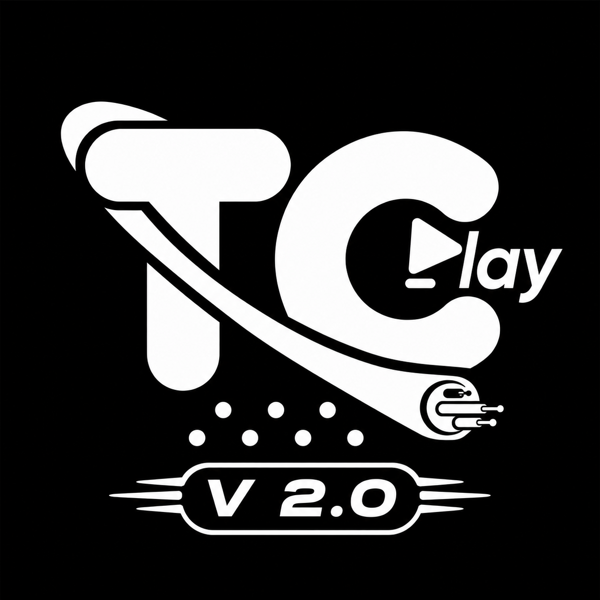

TELECABLE · TELEVISIÓN EN VIVO
Tu televisión,
en un solo lugar.
Ingresa con tu cuenta de Telecable y disfruta tus canales.
Canales
Elige un canal
Selecciona un canal y presiona OK para reproducir.
Flechas para navegar · OK para elegir · Atrás para volver